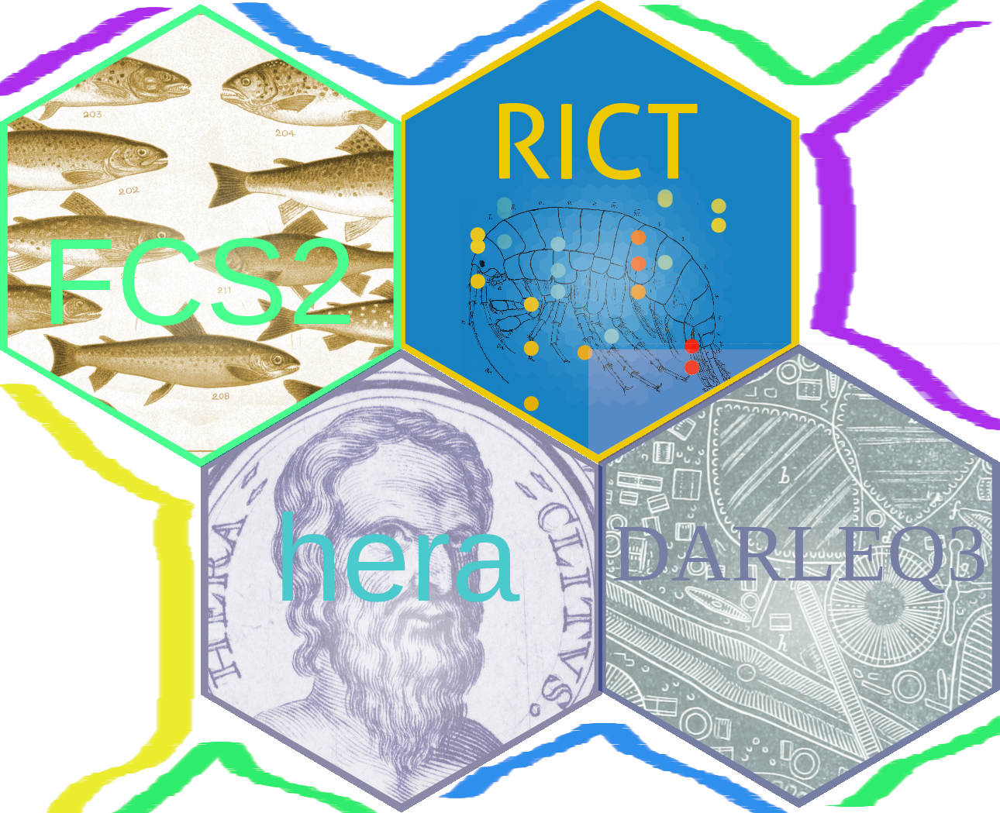

hera_specifications.RmdWORK IN PROGRESS - Drafting

WARNING: Blue sky thinking ahead
Keywords: collection, modelling, prediction, classification, forecast, scenario
TL:DR - To get a flavour of running multiple classification tools using a shared interface and data structures - check out the hera demo website GUI
We propose regulatory tools share a common set of design principles, interfaces and data structures.
Specifically, we propose an official collection of R packages designed to provide collaborative workflow for building and using classification tools. In turn, these packages will be unified into a single package called ‘hera’. This provides a common interface to run regulatory classification. We expect this process will facilitate code re-use, faster integration and knowledge exchange between method developers and practitioners.
UKTAG has guided the development of an impressive range of classification tools. This has involved many developers, researchers and experts dedicating their time and effort to creating tools to better understand pressures on the environment. We are confident that there are many future opportunities for collaboration and tool development in response to changing environmental pressures and improving scientific understanding. As access to modelling tools become more routine, we expect a proliferation of models and indices in the years ahead. For instance, new tools for diagnosing pressures, updates to existing tools and catchment scale planning. To aid better understanding of the environment through effectively combining multiple models and tools, we propose a they share a common design philosophy to aid integration and collaboration.
The aims of a shared design philosophy for regulatory classification R packages include:
In the next 10 years…
We assume it is likely that our aquatic ecological models will be subsumed into a more large scale environmental and climate models. These ‘total environment’ models may for instance use climate change models to forecast impact on invertebrates, water-use models to predict the impact on fish or spatial planning tools the impact on nutrient levels. The outputs will be used across regulatory reporting for RBMP, flood management, biodiversity improvements, carbon sequestering etc. Allowing multi-discipline assessment of impacts and trade-offs for each planning scenario and proposed measures - ensuring well-informed decisions-making.
All ecological data along with supporting data such as chemistry, climate, meteorological, geological, and satellite imagery, will be freely and easily accessible. We assume agencies will upload all data such as fish counter data, plant DNA or aerial imagery etc, into a ‘lake’ of environmental data.
To take step towards this vision, the underlying design of a models and tools must be modular and easy to connect and integrate in a variety of ways.
To aid collaboration and to response to the changing environmentally pressures, we propose creating a joint collections of packages to share understanding on the environment while providing the software infrastructure to lighten the burden of more mundane tasks involved in maintaining and deploying new models and interfaces.
This proposal is influenced by the work within the climate change research community such as the Climate Modelling and Diagnostics Toolkit, the MET office’s unified model approach. As well as best software practices such as on-going work in the R community such as ropenSci.
Here we introduce a prototype R package called hera. The key idea, is hera provides a common interface for existing WFD packages and future developments. This is achieved through a set of shared functions required to run and report classification. It builds on the best practice idea of how to run many models simultaneously in R while keeping the input and output data formats simple and homogeneous. We explain each function in detail below. In summary, each step represents a function within the hera package. This allows the re-use code and rules between existing and future tool development.
Steps
The examples below provide a taste of how this RFC could be implemented. Keep in mind, they are not full, complete or accurate. The data structure, naming and details could all change, they are presented as a rough draft
Firstly, sense-check the predictor and observation data is with expect limits. Additionally, check the data is within the expect parameter space based on training data used to create the classification model. Return the passing data and list of warnings/fails.
# install.packages("devtools")
# devtools::install_github("ecodata1/hera")
library(hera)
library(tidyverse)
demo_data <- hera::demo_data
validation(demo_data) %>%
head(5)# A tibble: 5 × 23
# Groups: sample_number, quality_elements [1]
sample_number quality_elements location_id location_descrip… easting northing
<int> <chr> <int> <fct> <dbl> <dbl>
1 3201863 River Invertebra… 8175 River Eden @ Kem… 341452 715796
2 3201863 River Invertebra… 8175 River Eden @ Kem… 341452 715796
3 3201863 River Invertebra… 8175 River Eden @ Kem… 341452 715796
4 3201863 River Invertebra… 8175 River Eden @ Kem… 341452 715796
5 3201863 River Invertebra… 8175 River Eden @ Kem… 341452 715796
# … with 17 more variables: latitude <dbl>, longitude <dbl>, date_taken <dttm>,
# sample_id <int>, analysis_name <fct>, question <fct>, response <fct>,
# units <fct>, taxon <fct>, mean_alkalinity <dbl>, result_id <chr>,
# taxon_id <int>, grid_reference <chr>, standard <chr>,
# quality_element <chr>, season <chr>, water_body_id <dbl>Using the indices() function, we calculate observed indices scores as required for each sample.
indices(demo_data) %>%
select(sample_number, indices) %>%
unnest(indices) %>%
group_by(quality_elements) %>%
slice_sample(n = 4) # A tibble: 4 × 4
# Groups: quality_elements [1]
quality_elements sample_number index value
<chr> <int> <chr> <chr>
1 River Diatoms 1564589 Alkalinity 75
2 River Diatoms 1250462 Motile 34.48
3 River Diatoms 648750 Lake Type HA
4 River Diatoms 2828750 Saline 7.99 Note, the invert indices are not calculated, they have been pre-calculated and are in the demo_data from the start.
We then predict reference scores for each sample:
prediction(demo_data[1:2200, ]) %>%
group_by(quality_elements) %>%
slice_sample(n = 4) %>%
select(sample_number, prediction) %>%
unnest(prediction)# A tibble: 6 × 4
# Groups: quality_elements [2]
quality_elements sample_number index predicted_response
<chr> <int> <chr> <dbl>
1 River Diatoms 2489784 TDI4 45.4
2 River Diatoms 1672942 TDI4 45.4
3 River Diatoms 3201863 TDI4 45.4
4 River Diatoms 2489784 TDI4 45.4
5 River Invertebrates 3294945 WHPT ASPT 6.86
6 River Invertebrates 3294945 WHPT NTAXA 24.4 See documentation prediction() for more information.
Based on the predicted and observed indices - we classify each sample using classification():
classification(demo_data) %>%
group_by(quality_elements) %>%
slice_sample(n = 4) %>%
select(sample_number, classification)# A tibble: 8 × 3
# Groups: quality_elements [2]
quality_elements sample_number classification
<chr> <int> <dbl>
1 River Diatoms 1912578 0.451
2 River Diatoms 1912578 0.451
3 River Diatoms 1250462 0.518
4 River Diatoms 1672942 0.282
5 River Invertebrates 1564589 NA
6 River Invertebrates 621928 NA
7 River Invertebrates 1457665 NA
8 River Invertebrates 2632159 NA Note, classification results for inverts are missing - this has not be implemented yet.
We now aggregate the samples by season, year, multi-year or waterbody as required:
aggregate <- aggregation(demo_data, c("year","season","waterbody"))
head(class)
We now run a report assessing samples from the same location for consistency. Note, that no report for fish is produced, the necessary adjustment/interpretation parameters have not been created for fish. This demonstrates that it is step by step process. Not all tools/models will have all the features development if not required or if not prioritized:
compare_report <- compare(new_data, old_data)
compare_report
We now run a report assesses two samples assess a discharge (up and downstream):
compare_report <- compare(site_one, site_two)
compare_report
As well as classification of water quality, additional we need to diagnose potential pressures. We use the diagnosis() function to report potential pressures.
diagnosis(demo_data) %>%
select(sample_id, diagnosis)
head()
A number of forecasting or scenario tools could be incorporated for either projecting current trends or assessing the impact of proposed measures.
scenario(demo_data, trends) %>%
head()
scenario(demo_data, measures) %>%
head()
For the most part we don’t expect users to go through each of these steps. But for developers and researchers it is useful to think about classification within this framework of discrete steps. For the majority of end users, agency staff or consultants, they can open the GUI hera_app() or visit the website directly. However, advanced users can use the hera function to wrap all these steps together for example hera(hera::demo_data).
Furthermore, agencies can integrate these functions into their systems using web services. Please see the demo web service and api documentation for using opencpu hosted packages.
Ecological modelling relies on sampling. The samples come in a range of forms from points, transects, images, grabs, DNA etc. But the general feature of modelling is based on being able to predict what we expect to find from whatever sampling technique we deploy. The sample is the fundamental observation which we compare against our prediction. The samples are discreet, either observed instantaneously or perhaps over a few minutes or hours (where dynamic changes are not significant).
Multiple samples can be aggregated to smooth variance but the sample still remains the fundamental building block. The sample could be a single pixel from an aerial image or a salmon moving through a fish counter. We still make predictions of what we expect this sample to be like even if the true picture only emerges after several samples are aggregated or compared.
Therefore, all our data share similarities, they consist of samples and observations. And additionally each sample will have predictor variables to allow us to predict expected reference values or outcomes.
There are a number of data dictionaries, metadata standards and semantic data definition across disciplines and organisations. It’s unclear exactly how we define out input and output datasets. We propose using best practice and make strides towards using common definition and standards where possible. In a similarly way to the climate model communities use of the Climate and Forecast Standard Names.
The Europe Environment Agency has produced a data dictionary for reporting. However this is mainly for high-level reporting. In particular, taxonomic results are not exchanged using this data structure. However, we use some aspects of this standard within hera to aid onward reporting to EEA.
A small sample demo dataset demo_data contains diatoms, macrophytes and inverts quality elements.
# A tibble: 5 × 4
# Groups: quality_element [5]
location_description date_taken sample_id quality_element
<fct> <dttm> <int> <chr>
1 River Eden @ Kemback Gauging Station 2017-07-20 12:15:00 3256506 Algal_RQB
2 River Eden @ Kemback Gauging Station 2011-05-04 13:45:00 1800006 Alien Species
3 River Eden @ Kemback Gauging Station 2017-05-17 15:00:00 3201863 Comment
4 River Eden @ Kemback Gauging Station 2014-05-20 08:10:00 2489784 Diatom Summary
5 River Eden @ Kemback Gauging Station 2017-05-17 15:00:00 3201863 Diatom Survey …First of all, we have ‘book-keeping’ variables. These allow us to reference data associated with particular samples, locations or WFD methods. And allow results to be aggregate at different levels.
# A tibble: 5 × 4
location_id sample_id date_taken quality_element
<int> <int> <dttm> <chr>
1 8175 3256506 2017-07-20 12:15:00 Macrophyte Reach Survey
2 8175 3256506 2017-07-20 12:15:00 Macrophyte Reach Survey
3 8175 3256506 2017-07-20 12:15:00 Macrophyte Reach Survey
4 8175 3256506 2017-07-20 12:15:00 Macrophyte Reach Survey
5 8175 3256506 2017-07-20 12:15:00 Macrophyte Reach SurveyAll data passed into hera must have these four variables. For ad hoc reporting, consultancies and students etc who don’t routinely record unique sample ids, a sample_id is generate if date_taken and location_id are provided.
These three variables are the minimal required, but in practice water_body_id maybe required for aggregation or simply location_description or NGR etc to help reference sites more easily. There is no restriction to the number of extra columns and these extra columns will be appended to outputs.
An observation consists of three variables question, response. The question variable identifies what is being determined such as alkalinity or depth etc. And the response is the value observed or recorded for that question.
Below is an example of diatom records, invert data and river flow in a shared input format.
# A tibble: 8,477 × 2
question response
<fct> <fct>
1 Site altitude 7
2 Source altitude 210
3 nems alkalinity 118.8889
4 Mean alkalinity 118.8889
5 nems slope 2.6000
6 Slope 2.6000
7 Dist to source 36.4
8 Site NGR NO 41452 15796
9 Easting 341452
10 Northing 715796
# … with 8,467 more rowsIn theory, this is all that is required. However for ease for interacting with existing dataset and ad hoc data, a fourth column taxon is useful due to the historic way taxon data is usually stored.
# A tibble: 5 × 3
question response taxon
<fct> <fct> <fct>
1 Taxon abundance 40 Navicula saprophila
2 Taxon abundance 2 Oulimnius
3 Taxon name Oligochaeta Oligochaeta
4 CW poor 0.3697185669e-23 <NA>
5 Planktonic No Gomphonema angustatumPredictive variables such as temperature, altitude, slope are added as additional columns. There is a trade-off here as predictor variables are added for each row in the dataset, increasing the size of the dataset. However this does make data analysis straightforward and this repeated can be easily compressed if size becomes an issue.
demo_data %>% select(`mean_alkalinity`, `altitude`, `distance_from_source`)
For students and consultancies requiring ad hoc usage, templates and documentation for preparing data will be provided.
For Agencies, data queries can be written to prepare outputs in the correct format.
For instance, here is a prototype function to pull data Environment Agency’s data.gov.uk web service and convert to the required hera input format.
location_id sample_id date_taken
1 http://environment.data.gov.uk/ecology/site/bio/43378 771094 2019-02-28
2 http://environment.data.gov.uk/ecology/site/bio/43378 771094 2019-02-28
3 http://environment.data.gov.uk/ecology/site/bio/43378 771094 2019-02-28
4 http://environment.data.gov.uk/ecology/site/bio/43378 771094 2019-02-28
5 http://environment.data.gov.uk/ecology/site/bio/43378 771094 2019-02-28
6 http://environment.data.gov.uk/ecology/site/bio/43378 771094 2019-02-28
quality_element question response
1 River Invertebrates BMWP_ASPT 6.33
2 River Invertebrates BMWP_CoS 7.00
3 River Invertebrates BMWP_N_TAXA 30.00
4 River Invertebrates BMWP_TOTAL 190.00
5 River Invertebrates CCI 15.00
6 River Invertebrates CCI_ASPT 2.14This RFC is mainly looking at a share design for inputs and outputs from classification tools.
This framework does however encourage a shared principles in thinking about the approach to modelling required which drives the classification method. However, we see no need to prescribe a modelling program or software. Researchers can download the reference and predictor data required and use any software they desire. Ultimately, the model we need to be called by R. So either the model needs to be written into R or in language which can be called by R (Python, fortran, C++ etc).
Alternatively, if researchers can’t provide an api for R to call, the recommendation is to use R - which integrates more directly into the pipeline.
Once modelling is completed, the model object is saved and deployed. Any existing or future data collected using the platform will be run through the model at the sample level.
Researchers can then build tools to display and aggregate the sample level results as required (Waterbody, Year, Catchment etc). Where it would be possible to share techniques for producing Confidence of Class, assessment of data suitability and adjustment factors etc.
As new regulatory developments and updates requirements are identified, the lead contacts from the agencies and method developers are ‘on-boarded’ to demonstrate the design principles and collaborative framework of packages. Where skill development is required further training can be provided, or additional external or internal support from the agency commissioning the work.
A workshop for lead data experts / R coders from each agency delivers institutional knowledge on how internally developed tools will fit with the shared design philosophy as well as seeting expectations for colloaboration with external researchers.
All UKTAG sub-groups and their nominated leads in the devolved agencies would contribute new method develops and tools to the shared collection of packages. Where tools are agency specific, these could also make use of the platform if required.
As agencies commission new tools to be developed, researchers can upload their predictive variables, reference data and models into a central repo for easier collaboration.
Demo input data format (truncated) and full list of column names
DataHeldBy SiteCode Alternative.site.code Repeat.check SiteName
1 EA 525052 NA N 13809
2 EA 507441 NA Y 13810
3 EA 525051 NA N 34611
4 EA 122881 NA Y 5435
Site.description ...
1 13809 ...
2 13810 ...
3 34611 ...
4 5435 ... [1] "DataHeldBy" "SiteCode"
[3] "Alternative.site.code" "Repeat.check"
[5] "SiteName" "Site.description"
[7] "Easting" "Northing"
[9] "NGR" "SurveyDate"
[11] "WBId" "WBName"
[13] "NumberOfRuns" "SurveyArea"
[15] "WetWidth" "Slope"
[17] "BarrierType" "ImpassableBarriers"
[19] "Sense.check.passed." "CatchmentAreaUpstream"
[21] "CatchmentDrainageDirection" "GeologyClass"
[23] "Altitude" "DistanceFromSource"
[25] "DistanceToSea" "AnnualMeanFlow"
[27] "AlkalinityValue" "TotalPValue"
[29] "DOCValue" "SuspendedSolidsValue"
[31] "IOH.hydrometric.area" "HydrometricAreaNo"
[33] "LandUse.AgriculturalAreas" "LandUse.ConiferousForests"
[35] "LandUse.Wetlands" "Substrate.Small"
[37] "Substrate.Large" "Substrate.Bedrock"
[39] "Salmon_fry.Run1Total" "Salmon_fry.Run2Total"
[41] "Salmon_fry.Run3Total" "Salmon_fry.Run4Total"
[43] "Salmon_parr.Run1Total" "Salmon_parr.Run2Total"
[45] "Salmon_parr.Run3Total" "Salmon_parr.Run4Total"
[47] "Trout_fry.Run1Total" "Trout_fry.Run2Total"
[49] "Trout_fry.Run3Total" "Trout_fry.Run4Total"
[51] "Trout_parr.Run1Total" "Trout_parr.Run2Total"
[53] "Trout_parr.Run3Total" "Trout_parr.Run4Total" Ouput
DataHeldBy SurveyDate SiteCode SiteName WBId WBName ...
1 EA 03/09/2015 525052 13809 10675 ...
2 EA 04/09/2015 507441 13810 10675 White Esk (u/s Rae Burn) ...
3 EA 03/09/2015 525051 34611 10676 ...
4 EA 01/09/2015 122881 5435 10676 Garwald Water ... [1] "DataHeldBy"
[2] "SurveyDate"
[3] "SiteCode"
[4] "SiteName"
[5] "WBId"
[6] "WBName"
[7] "All species WB EQR Bad %"
[8] "All species WB EQR Poor %"
[9] "All species WB EQR Moderate %"
[10] "All species WB EQR Good %"
[11] "All species WB EQR High %"
[12] "All species WB EQR mean"
[13] "All species survey EQR Bad %"
[14] "All species survey EQR Poor %"
[15] "All species survey EQR Moderate %"
[16] "All species survey EQR Good %"
[17] "All species survey EQR High %"
[18] "All species survey EQR mean"
[19] "Salmon_fry WB EQR mean"
[20] "Salmon_fry survey EQR mean"
[21] "Salmon_fry observed total catch"
[22] "Salmon_fry probability present"
[23] "Salmon_fry expected total catch if present"
[24] "Salmon_fry expected total catch"
[25] "Salmon_parr WB EQR mean"
[26] "Salmon_parr survey EQR mean"
[27] "Salmon_parr observed total catch"
[28] "Salmon_parr probability present"
[29] "Salmon_parr expected total catch if present"
[30] "Salmon_parr expected total catch"
[31] "Trout_fry WB EQR mean"
[32] "Trout_fry survey EQR mean"
[33] "Trout_fry observed total catch"
[34] "Trout_fry probability present"
[35] "Trout_fry expected total catch if present"
[36] "Trout_fry expected total catch"
[37] "Trout_parr WB EQR mean"
[38] "Trout_parr survey EQR mean"
[39] "Trout_parr observed total catch"
[40] "Trout_parr probability present"
[41] "Trout_parr expected total catch if present"
[42] "Trout_parr expected total catch" Input data for DARLEQ3 tool is a list of dataframes. Here’s an example of input data format (truncated) and full list of column names
AC023A AC083A AC143A AC161A AC9999 AD009A AM001A AM004A ...
SPR001 0.000000 0 0 0 0 0.31348 0.000000 0 ...
AUT001 0.000000 0 0 0 0 0.00000 0.000000 0 ...
SPR002 0.332226 0 0 0 0 0.00000 0.332226 0 ...
AUT002 0.000000 0 0 0 0 0.00000 0.000000 0 ... [1] "AC023A" "AC083A" "AC143A" "AC161A" "AC9999" "AD009A" "AM001A" "AM004A"
[9] "AM011A" "AM012A" "AM013A" "AM084A" "AM9999" "AP001A" "AS001A" "AS003A"
[17] "AU003A" "AU9999" "BR001A" "BR9999" "CA002A" "CA9999" "CC9999" "CI002A"
[25] "CI005A" "CL001A" "CM004A" "CM006A" "CM007A" "CM009A" "CM013A" "CM022A"
[33] "CM038A" "CM041A" "CM9999" "CN001A" "CO001A" "CO001B" "CO001C" "CO005A"
[41] "CO010A" "CO9999" "CV001A" "CV005A" "CY003A" "CY011A" "CY019A" "CY9999"
[49] "DD001A" "DE001A" "DP007A" "DP012A" "DP9999" "DT003A" "DT004A" "DT010A"
[57] "DT021A" "DT022A" "DT9999" "EC001A" "EL001A" "EP9999" "EU002A" "EU009A"
[65] "EU009C" "EU047A" "EU070A" "EU9999" "EY003A" "EY004A" "EY005A" "EY011A"
[73] "EY015A" "EY016A" "EY017A" "EY9999" "FA021A" "FF001A" "FF002A" "FF9999"
[81] "FR007A" "FR007C" "FR008A" "FR009A" "FR009B" "FR019A" "FR026A" "FR9999"
[89] "FU001A" "FU002A" "FU037A" "GO001A" "GO003A" "GO004A" "GO006A" "GO013A"
[97] "GO013C" "GO019A" "GO023A" "GO023B" "GO024C" "GO027A" "GO029A" "GO050A"
[105] "GO052A" "GO055A" "GO066A" "GO9999" "GY001A" "GY005A" "HA001A" "HN001A"
[113] "LU001A" "LU003A" "MA9999" "ME015A" "MR001A" "MR001B" "NA003A" "NA007A"
[121] "NA008A" "NA009A" "NA021A" "NA023A" "NA026A" "NA027A" "NA030A" "NA035A"
[129] "NA037A" "NA042A" "NA051A" "NA054A" "NA063A" "NA066A" "NA080A" "NA084A"
[137] "NA095A" "NA112A" "NA114A" "NA124A" "NA134A" "NA433A" "NA433D" "NA462A"
[145] "NA675A" "NA745A" "NA751A" "NA764A" "NA768A" "NA9999" "NE008A" "NI002A"
[153] "NI005A" "NI006A" "NI008A" "NI009A" "NI010A" "NI014A" "NI015A" "NI017A"
[161] "NI021A" "NI024A" "NI025A" "NI027A" "NI028A" "NI031A" "NI033A" "NI034A"
[169] "NI042A" "NI043A" "NI044A" "NI046A" "NI049A" "NI052A" "NI065A" "NI080A"
[177] "NI099A" "NI110A" "NI152A" "NI164B" "NI166A" "NI171A" "NI198A" "NI199A"
[185] "NI212A" "NI9999" "PE002A" "PI014A" "PI9999" "PS001A" "RC002A" "RE001A"
[193] "SA003A" "SA012A" "SL001A" "SL002A" "SR001A" "SR002A" "SS002A" "SS003A"
[201] "ST001A" "ST9999" "SU001A" "SU032A" "SU073A" "SU9999" "SY001A" "SY003A"
[209] "SY004A" "SY004B" "SY013A" "SY043A" "TA001A" "TA002A" "TE003A" "TF003A"
[217] "TF015A" "TF9999" "TH038A" "TU003A" "UN9994" "UN9995" "YH001A" "ZZZ834"
[225] "ZZZ835" "ZZZ842" "ZZZ844" "ZZZ846" "ZZZ847" "ZZZ852" "ZZZ859" "ZZZ866"
[233] "ZZZ869" "ZZZ871" "ZZZ872" "ZZZ885" "ZZZ887" "ZZZ888" "ZZZ893" "ZZZ895"
[241] "ZZZ896" "ZZZ897" "ZZZ900" "ZZZ901" "ZZZ905" "ZZZ907" "ZZZ908" "ZZZ910"
[249] "ZZZ911" "ZZZ912" "ZZZ920" "ZZZ921" "ZZZ922" "ZZZ923" "ZZZ926" "ZZZ927"
[257] "ZZZ939" "ZZZ941" "ZZZ949" "ZZZ953" "ZZZ980" "ZZZ982" "ZZZ985" "ZZZ986"
[265] "ZZZ987"[1] "SampleID" "SiteID" "SAMPLE_DATE" "Alkalinity" "Stream"
[6] "Reach" Output (list of dataframes)
N_TDI5LM N2_TDI5LM Max_TDI5LM TDI5LM eTDI5LM
SPR001 41 12.39 16.93 55.60483 68.49447
AUT001 23 3.09 51.57 70.01608 68.49447
SPR002 55 13.14 20.93 70.66666 69.28261
AUT002 39 7.69 26.91 66.08840 69.28261
SPR003 39 9.37 27.30 50.40770 65.48689
AUT003 32 5.87 37.14 39.65652 65.48689 CoCB ROM CoCHG CoCMPB ROM_GM
43 0.00 20.41 98.43 1.57 1.57
33 0.00 39.91 96.99 3.01 3.01
42 0.00 0.00 100.00 0.00 0.00
41 0.00 0.00 100.00 0.00 0.00
36 0.21 87.48 12.56 87.44 12.56
35 0.00 28.74 86.12 13.88 13.88[1] "TDI5LM"$N_samples
[1] 100
$N_samples_gt_zero
[1] 100
$N_taxa
[1] 265
$N_taxa_gt_zero
[1] 265Here’s an example of input data format (truncated) and full list of column names
SITE Waterbody Year NGR Easting Northing Altitude Slope ...
1 MYR-GB-01-R Waterbody name 2016 SE 94200 91000 60 2.7 ...
2 MYR-GB-01-R Waterbody name 2017 SE 94200 91000 60 2.7 ...
3 MYR-GB-01-R Waterbody name 2018 SE 94200 91000 60 2.7 ...
4 MYR-GB-05-R Waterbody name 2016 TL 92100 27200 15 1.3 ... [1] "SITE" "Waterbody"
[3] "Year" "NGR"
[5] "Easting" "Northing"
[7] "Altitude" "Slope"
[9] "Discharge" "Velocity"
[11] "Dist_from_Source" "Mean_Width"
[13] "Mean_Depth" "Alkalinity"
[15] "Boulder_Cobbles" "Pebbles_Gravel"
[17] "Sand" "Silt_Clay"
[19] "Hardness" "Calcium"
[21] "Conductivity" "Spr_Season_ID"
[23] "Spr_TL2_WHPT_ASPT (AbW,DistFam)" "Spr_TL2_WHPT_NTaxa (AbW,DistFam)"
[25] "Spr_Ntaxa_Bias" "Sum_Season_ID"
[27] "Sum_TL2_WHPT_ASPT (AbW,DistFam)" "Sum_TL2_WHPT_NTaxa (AbW,DistFam)"
[29] "Sum_Ntaxa_Bias" "Aut_Season_ID"
[31] "Aut_TL2_WHPT_ASPT (AbW,DistFam)" "Aut_TL2_WHPT_NTaxa (AbW,DistFam)"
[33] "Aut_Ntaxa_Bias" Output
ROW SITE YEAR FAIL
1 16 TST-NI-04-D 2018 ---
2 4 TST-NI-04-R 2018 ---
WARNING
1 You provided LATITUDE: 55.1996487989298, max value used to train model: 55.1995835.
2 You provided LATITUDE: 55.1996487989298, max value used to train model: 55.1995835.
REPLACEMENT
1 ---
2 --- SITE YEAR WATERBODY H_NTAXA_spr_aut G_NTAXA_spr_aut
1 TST-NI-01-R 2018 Waterbody name 96.61 3.3
2 TST-NI-02-R 2018 Waterbody name 4.51 28.34
3 TST-NI-03-R 2018 Waterbody name 83.04 15.63
4 TST-NI-04-R 2018 Waterbody name 99.27 0.72
M_NTAXA_spr_aut ...
1 0.09 ...
2 48.65 ...
3 1.32 ...
4 0.01 ... [1] "SITE" "YEAR"
[3] "WATERBODY" "H_NTAXA_spr_aut"
[5] "G_NTAXA_spr_aut" "M_NTAXA_spr_aut"
[7] "P_NTAXA_spr_aut" "B_NTAXA_spr_aut"
[9] "mostProb_NTAXA_spr_aut" "NTAXA_aver_spr_aut"
[11] "H_ASPT_spr_aut" "G_ASPT_spr_aut"
[13] "M_ASPT_spr_aut" "P_ASPT_spr_aut"
[15] "B_ASPT_spr_aut" "mostProb_ASPT_spr_aut"
[17] "ASPT_aver_spr_aut" "mintawhpt_spr_aut_H_MINTA_"
[19] "mintawhpt_spr_aut_G_MINTA_" "mintawhpt_spr_aut_M_MINTA_"
[21] "mintawhpt_spr_aut_P_MINTA_" "mintawhpt_spr_aut_B_MINTA_"
[23] "mintawhpt_spr_aut_mostProb_MINTA_"